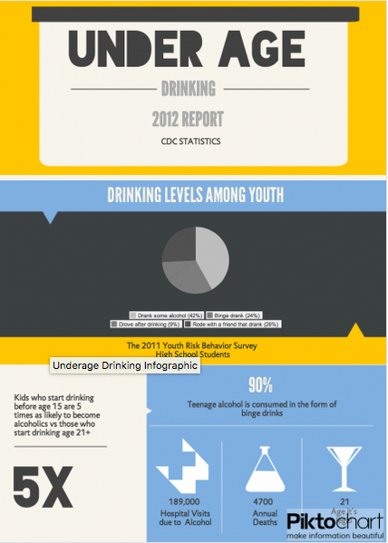
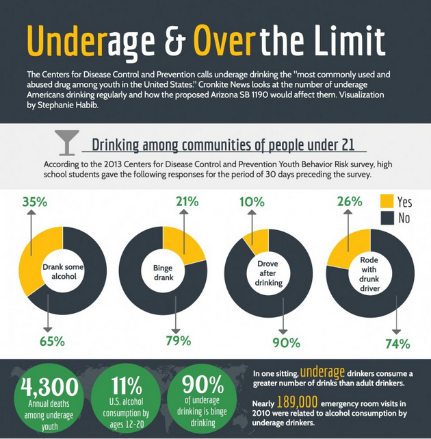

This webpage displays two Infographics about Underage drinking habits and statistics found on google. These Inforgraphics have been studied and analyzed carefully to create a visualization Wheel using inkscape to represent the comparison. Further, an in-depth analysis has been carried out to point out the positive and the negatove points of the infographics found.
All the findings are presented below
Here are the images and links to the websites from where these Infographics are fetched :
 Infographic1
 Infographic2
This is an image of the visualization wheel created using inkscape based on the findings and analysis of the 2 Infographics shown above-
ANALYSIS:
What the Infographics do well :
The data is well quantified, shows numbers and exact values which helps in better understanding of the infographic and gives a clear idea of the situation.
The information is well depicted with enough decoration and the infographic is colorful and attractive which adds interest in reading it.
The values and the data seem familiar with the real world conditions as heard in news media.
The infographic succeeds in conveying the message (harm of underage drinking).
The statistics provided in the infographic are enough to make conclusions.
What could be improved :
More data and information would make the infpgraphic much better and efficient.
The data is somehow redundant which is why the total amount of information is lesser than it could actually have been.
The infographics could have had more dimensions.
The infographics could have been more attractive and colorful to attract readers better.
There could have been more dimensions which would add more functionality to the infographics.